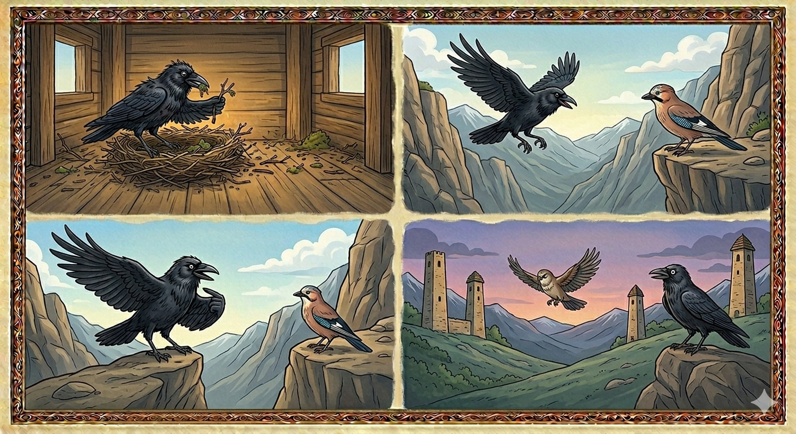

И.А. Дахкильгов. Хьехаме дувцарш - поучительные рассказы-притчи.
И.А. Дахкильгов. Хьехаме дувцарш - поучительные рассказы-притчи. Из ингушского фольклора.

БӀи хувца енна къайг
Сихъенна сигала гӀолла йодаш хиннай къайг. - Яьй! Фу ду Ӏа? Ма чӀоагӀа сихъенна йода хьо! - аьнна, тӀехьа кхайкад цунга цхьа оалхазар. - БӀы чӀоагӀа бехьбеннаб са. Хьадж еннай, бӀаьстан юхе кхалажах санна. Цудухьа керда бӀы бе йода со, - жоп деннад къайго. - Боккъал бакъдар алалахь, цу кердача бӀена чу малав хьа вахаргвар? - хаьттад юха а. - Со я-кха, кхы мала хилийта доаллар хьо! - Хьай дегӀаца мел йола маьже хьайца дӀахьой Ӏа? - Ца йихьача, мича хьоргьяр аз ераш? - Керда бӀы бе безац хьа тӀаккха, дукха ха яьлалехьа из а бехьлургба хьа, - аьнна, оалхазар дӀадахад.
РУССКИЙ
Решила ворона гнездо поменять
Куда-то озабоченно летела ворона. - Эй! Куда это ты так заспешила? - спросила какая-то птица. - Мое гнездо все загажено, развонялось, как навозная жижа весною. Лечу новое гнездо строить, ответила ворона. - А скажи, кто же будет жить в том новом гнезде? - вновь спросила птица. - Я! А кто же еще? - был ответ. - Ответь, все ли части твоего тела будут с тобою в том новом гнезде? - Разумеется! А где же им еще быть? - Тогда ты зря стараешься. Тебе нет нужды строить новое гнездо, - сказала птица и улетела.
ENGLISH
The crow had decided to change her nest
She was flying off somewhere, looking rather preoccupied. "Hey! Where are you rushing off to?" asked another bird. "My nest is filthy and stinks like slurry in spring." "I'm flying off to build a new one," replied the crow. "Who's going to live in that new nest?" asked the bird again. "Me! Who else?" came the reply. "Will all the parts of your body be with you in the new nest?" "Of course! Where else would they be?" "Then you're wasting your time. There's no need for you to build a new nest," said the bird, before flying away.
НОХЧИЙН
Бен хийца йоллу къиг
Сихйелла стигалехула йодуш хилла къиг. - Яьй! ХӀун до ахь? Ма чӀогӀа сихъелла йоду хьо! - аьлла, тӀаьхьа кхайкхина цуьнга цхьана олхазаро. - Бен чӀогӀа бехбелла сан. Хьожа йаьлла, бӀаьстенан йуьхье кхеллех санна. Цундела керла бен бан йоду со, - жоп делла къийго. - Баккъал бакъдерг алалахь, цу керлачу бенна чу мила ву хьан вехар верг? - хаьттина йуха а. - Со йу-кх, кхин мила хилийта доллар хьо! - Хьайн дегӀаца мел йолу меже хьайца дӀахьой ахь? - Ца йаьхьча, мича хьур йар ас хӀорш? - Керла бен бан безац хьан тӀаккха, дукха хан йалале иза а бехлур бу хьан, - аьлла, олхазар дӀадахна.
ПОГОВОРКИ
БӀеха лелаяьча можах хинжий деннад. В грязной бороде гниды заводятся. Nits breed in an unkempt beard. Боьха лелийначу можах хинжий дойлла.Веннавар аьнна Ӏергвац шийна тӀадоацар леладе Ӏемар. Даже умерев, не бросит своих вредных привычек тот, кто привык лезть не в свои дела. One who is used to meddling in others' affairs won't give it up even in death. Веллавар аьлла Ӏийра вац шена тӀедоцург лело Ӏаьмнарг.Воча фусамнаьна наӀар тӀехьашка массаза бӀеха хул. У плохой хозяйки за порогом всегда много мусора. A bad housewife always has litter piled by her threshold. Вочу хӀусам-ненан неӀаран тӀехьашка массазза боьха хуьлу.Къайга бӀы цӀаккха цӀена хиннабац. Гнездо вороны чистым никогда не бывает. A crow's nest is never clean. Къийган бен цкъа а цӀена хилла бац.Къайго а хьалхагӀа бӀы бий мара таьлми даккхац. Даже ворона сначала гнездо строит и лишь затем воронят выводит. Even the crow builds its nest before raising its chicks. Къийго а хьалхах бен бина бен тевна даккхац.Наьха кӀур урагӀабахийта гӀийртачун ший кӀур пхорагӀа бахаб. У того, кто стремился выпрямить дым чужой трубы, свой дым по земле стлался. He who tried to straighten someone else's smoke ended up with his own trailing low along the ground. Нехан кӀур ирахбахийта гӀиртинчун шен кӀур пурх бахна.Оалхазаро а цӀонал ший бӀена чу яц. Даже птица не гадит в своем гнезде. Not even a bird fouls its own nest. Олхазаро а цӀаналла шен бен чу ца йо.Пандар лакха ца ховча пандар во ба яьхад. Не умеющий играть на гармошке твердит, что гармонь плоха. He who cannot play the accordion insists the accordion is broken. Пондар лакха ца хуучо пондар вон бу баьхна.Рузкъа цӀеца-хьацарца мара гулдаьдац. Лишь потом и кровью добывается богатство. Wealth is gained only through toil and sweat. Рицкъ цӀийца-хьаьцарца бен гулдалац.Цхьанна хӀаманца цӀенлургдац сага бӀеха дог. Ничем не очистить грязное человеческое сердце. Nothing can cleanse a person's filthy heart. Цхьанна хӀуманца цӀанлур дац стеган боьха дог.Цхьанне яьхад: “Фу де деза ховча хана, хӀама дика ду аз; фу де деза ца ховча хана, - наха чӀоагӀа дика хьехараш де ховш ва со”. Некто сказал: “Когда я знаю, что надо делать, я это хорошо делаю. Когда же не знаю, то умею давать очень хорошие советы”. One man said: "When I know what should be done, I do it well; when I don't know, I'm very good at giving advice." Цхьаммо баьхна: "Х1ун дан деза хууш хилча, хӀума дика до ас; хӀун дан деза ца хуучу хенахь, - нахан чӀогӀа дика хьехараш дан хууш ву со".Ший бӀеха бӀи къайга а дикагӀа хет. Даже вороне свое грязное гнездо милее. Even the crow finds its own filthy nest dearer. Шен боьха бен къийгана а диках хета.